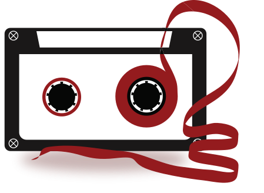

Earie
An audio streaming app that allows users to listen to podcasts that are based on crime and mystery stories. Whether you need a bedtime story or just want to listen to something interesting, Earie's got you covered. Every day a new story is posted on the app, and even a quiz to test how much you know from the previous stories.
Problem
I want to create an app that uploads a daily crime-related story persistently so the target audience (female crime enthusiasts), has something to look forward to. Some people do tend to sleep better when listening to a bedtime story so in designing this app, I want to include a function that targets this problem.
Logo Process
For the process of the logo design, I started sketching ears because the app is named “EARIE”. For my first version, I found a type that is a little bit weird and fit the eerie type of vibe this app is going for. However, I didn’t settle for this one because there was just too much going on. For the Final logo, I decided to use the font face “Citrus Gothic”, and the font face itself already has an eerie personality with its spur on the “e” and “a”, and the texture it already has.
Flowchart

Lofidelity Wireframe